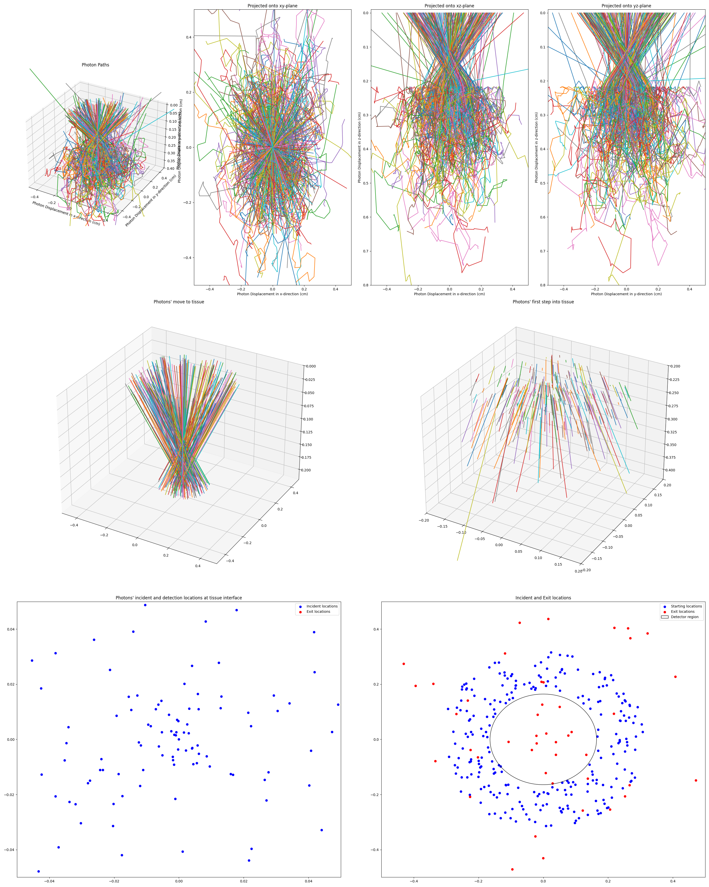

Photon Canon
A python toolbox for in-depth 3D Monte Carlo simulation with custom systems of planar mediums, custom beams and detectors
Table of Contents
Project Description
Photon-canon is a fully parallel Monte Carlo simulation framework with support for custom optical systems and devices.
Users can create custom optical Medium objects with wavelength-dependent attributes, stack these into planar System
objects, and simulate Photon objects within their system. The injection of Photon objects can be controlled through
user-defined custom Illumination objects that define direction and location of Photon initialization, with simple
compatibility with user-defined samplers. Additionally, custom Detector objects provide spatial resolution for
Photon exit locations, to provide precise forward-problem modelling that can decrease loss in inverse fitting.
System and Photon objects also include plot features to allow for qualitatively troubleshooting and checks for
expected behaviors. These also are just fun to look at.

Try it for yourself. Submit a Simulate Me! issue to update the sample simulation shown here with your own parameters.
Different builds
The default build (with cupy) provides vectorized GPU-compatibility for rapid, parallel generation of simulation-based
lookup tables. When run on the CPU, the numpy build still provides an at least order of magnitudes speed up over
equivalent one-by-one simulations. When installing on a system without a CUDA-compatible GPU, the numpy build must be
used. See installation for more details.
Photon-canon objects
Photon canon is built on key optics objects that drive the simulation power. These objects are:
Photon
The Photon object type is the real work-horse of the simulation. The Photon object is a bit of a misnomer, as it
should actually be thought of as a packet of photons. By allowing the object to actually hold many thousands of photon,
simulations can be parallelized to greatly increase the speed. A Photon object may have any batch_size that a
systems memory can handle, but is single in its wavelength and system, however. The output attributes, T, R, and A are
trackers of all batch_size members. When considering the appropriate batch_size, many factors come into play. A
Photon object will occupy a space on memory depending on the number of steps of a simulation, which is dependent on
the properties of the System. Generally, a low-absorbing, high-scattering system will have long simulations, so
batch_size should be smaller. High-abosrbing, low-scattering systems will simulate in very few steps, and can handle
higher batch_size inputs. Consider that the location coordinates for a batch_size of 50,000 occupy ~1.2 GB of
memory. As the Photon is simulated, its space in RAM only increases as trackers of weight and location augment.
The Photon object is responsible for tracking and updating the information of the simulation, including all photon
locations, directions, current mediums, weights, etc. It is fully vectorized and supports recursing photons, that are
created at index-mismatched interface reflections. The precision with which this framework was designed, does open the
door for very long-lived photons, either through deep recursion (though this is unlikely), or through total internal
reflection (this is much more probable). Options are included to limit these behaviors, though it is recommended that
they are left on initially, and only switched off or limited if necessary. In most cases, these behaviors have minimal
effect in simulation time, but have slight impacts on simulation outputs. Members of Photon objects can be simulated
until they are terminated, which occurs when they either exit their System or have a weight of 0. Once they are
terminated, their location and direction will not change, but the full object simulation may continue until all members
are terminated, at which point, querying photon.is_terminated returns True, and additional simulation steps will
have no effect (though move() method calls will extend the location history trivially). Photon objects include
attributes, T, R, and A, to track cummulative outcomes of members. They can be simulated manually and step-wise using
absorb(), move(), and scatter() methods, or using the builtin simulate() method which runs until all members are
terminated.
Scattering
Scattering when g is not 0 is based on the Henyey-Greenstein phase function following equation:
and the polar angle is updated using a uniform distribution between 0 and 2π:
Absorption
Absorption simply updates the weight as follows
Move
Step sizes (when not input by the user) are determined for the moves by sampling the mean free path based on the total interaction coefficient, μt, defined as:
Sampling is derived using the inverse distribution method and Beer-Lambert Law, yielding the following:
Medium
Medium objects are simply wrappers for optical properties, namely, n, μs, μa, and g.
These properties can either be defined as scalars for the medium or as a wavelength-dependent arrays that can then be
interpolated used to determine their value at an input wavelength. Photon objects query the medium to determine the
necessary properties of their current medium at any point. The Photon only ‘knows’ the properties of the location it
in, nothing else. The Medium object, when stacked into a system, gives the Photon this information.
System
System objects are the connection between Medium and Photon objects. A System is made up of one or more Medium
objects stacked with specified thicknesses from 0 cm and on. System objects can be finite or semi-infinite. Finite
System objects are filled on both the negative and positive infinity sides with surroundings. When semi-infinite,
they will be filled with surroundings only on the negative infinity side. The n of surroundings can be manually
defined in the System, as this value controls the reflection intensity of exiting Photon objects. For most
light-matter interactions that this framework simulates, the Photon object uses the System as a mediator to query
the optical properties of the Medium, as the System holds the spatial information necessary to determine the current
medium, given a location. The System is also key in detemrming the completion of simulation, as a Photon is
terminated when it exits the System.
Illuminator
Illumination objects are simply sampler wrappers. They provide an easy API to automate the sampling of illumination
photons from user defined functions. When added to a system, they can be used to obtain spatially distributed Photon
objects. They are always placed into systems centered at the (0, 0, 0). transparent media can be stacked beneath this to
effectively change the starting point.
Detector
Similar to Illuminator objects, Detector objects are wrappers for user defined functions. These are boolean-based
and return whether a location and, optionally, direction would be detected. The object automatically counts how the
weight queried and the weight detected. If not weight is input when the Detector is queried, then it is assumed to be
unity. At any time, counts can be reset with the reset() method. This is useful to allow the same object to be used
in iterative simulations, such as when creating a lookup table.
Unlike Illuminator objects, Detector objects must include a z coordinate when stacked into a system. They will be
centered at (0, 0, z). The user-defined detection pattern can be used to offset the detection in the x and y directions.
By using multiple detector objects with different offsets, a detector array can be created to spatially resolve photon
detection even further.
Requirements
Python 3.12 (others may work, untested)
Numpy/Cupy
Pandas
Scipy
Matplotlib
Installation
Basic Install
To install the project and its dependencies, run the following command:
pip install photon-canon
NOTE: By default,
pipwill not installcupy. On systems without a CUDA-GPU, this is the desired behavior, but you will receive an import warning when using this package. IF you have a compatible GPU, see below for CUDA options.
CUDA Systems
If you have a compatible GPU, you can run photon-canon with cupy asa drop-in for numpy. If you already have cupy
installed, this will be the default behavior. If not, you can install it with photon-canon by calling the optional
dependencies for CUDA as follows:
pip install "photon-canon[cuda]"
Documentation
Documentation is available in the _build directory, auto-generated from docstrings with sphinx. To browse the documentation, either vie/generate the PDF from latex (if one is not available, run pdflatex photon_canon.tex from the latex directory with a machine with $\LaTeX$ installed ) or serve the html locally. To do this, run python -m http.server 8000 from the html directory and navigate to localhost:8000 in a browser.